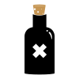

Carlin’s Opinionated
Guide to Cocktails

Libations Abound
I provide here only a selection. A complete account of all known drinks, from absinthe to the Zoom cocktail (brandy, honey and cream—not today, thank you) would be deadening to write and read. Completeness would also involve the rehearsal of a good deal of common knowledge. It would be rather shabby to take money for explaining that, for instance, a gin and tonic consists of gin and tonic, plus ice and a slice of lemon. However, this gives me the occasion to remark that that admittedly excellent and refreshing drink gains an extra thirst-quenching tang from a good squeeze of lemon juice in addition to the lemon slice and so to propound a general principle: any drink traditionally accompanied by a bit of fruit or vegetable is worth trying with a spot of the juice thrown in as well..
I confine myself, then, to giving recipes intended to offer something of my own, whether it be a modest tip like one exemplified above, an attack on some received notion, or, as in some cases, a whole new formula—if there is any such thing in a field so extensively and intensively studied.
Kingsley Amis, Every Day Drinking
Gin
Vesper
“Just a moment.
- Three measures of Gordon's,
- one of vodka,
- half a measure of Kina Lillet.
Shake it well until it's ice-cold, then add a large thin slice of lemon peel. Got it?”
Martini
Use
- a bit of vermouth
- quite a bit more gin
A classic, and not one that needs much explaining. I, for one, prefer to be undogmatic about my martinis: have it any way you like.
Variations
- Use vodka instead of gin.
- Winston Churchill style: pour well-chilled gin into a well-chilled glass and nod your head in the direction of France.
Gibson
- 2 oz gin
- ½ oz dry vermouth
Stir over ice, serve ice cold in a martini glass, garnish with a cocktail onion. This simple variant of the martini was almost certainly invented at many cocktail parties when the host realized he had forgotten to buy olives, and even once in a dorm room with slices of red onion from the fridge. § My favorite tale is of a shrewd investment banker named Montgomery Gibson, would took his clients out to a three-martini lunch and have the barman fill his glass with ice cold water.
Tom Collins
- 1.5 oz gin
- 1 oz fresh lemon juice
- 1 tablespoon simple syrup
- 2.5 oz fizzy water
A Tom Collins is just a Gin Fizz with a fancy name. Some people use Collins mix, but what you’d buy at the store is just lemon juice from concentrate mixed with a little sugar and carbonated. To make one at home, mix the ingredients above in a Collins glass—some people insist on exactly two ice cubes, but don’t be one of those people.
Gimlet
- 2 oz gin
- 2 oz Rose’s sweetened lime juice
Serve in an old fashioned glass with ice. A favorite of Raymond Chandler, who insisted that “a Gimlet is half gin and half Rose’s, and nothing else.” The recipe above is his.
Crunk juice
A mainstay of the college student, crunk juice can be made many ways (see variations). The preferred method requires a milk jug or gallon-sized container.
Thaw
- 1 container frozen limeade concentrate
and combine with 3 ½ volumes of water from the concentrate container. This will fill a gallon container about halfway. To this, add
- a fifth of inexpensive gin
and shake well. This recipe makes about three quarters of a gallon of crunk juice. Serve over ice in tall glasses.
Variations
- Keep the juice and gin separate till serving.
- Use another flavor of concentrate
- Use vodka instead of gin
Gin & Tonic
- 2 oz gin
- 3 oz tonic water
Mix in an old fashioned glass with ice. Add lime as a garnish to taste. The gin and tonic is a drink that I have not yet mastered; a friend of mine makes them using a combination of guesswork, approximation, and luck. He admonishes me to “add stuff until it tastes good,” which is good advice for all sorts of things.

Greyhound
A simple and delicious drink that could just as easily be called gin and juice. Most cocktail books instruct you to salt the rim of a Greyhound. I don't care for it.
Fill a highball glass halfway with ice. Add
- 2 oz gin
- grapefruit juice as desired
Stir till quite cold.
Variations
- Use vodka instead of gin.
- Use almost any kind of fruit juice. Pineapple, apple, lemonade, limeade.
- Stir over ice then pour in to a chilled cocktail glass for a fancier presentation.
Screwy
I call this a screwy: it's a screwdriver made with gin. In a big glass filled with ice, pour
- a hefty slug of gin
- about twice as much fresh orange juice
and mix till cold. If you've never juiced fresh oranges to make this drink you really owe it to yourself to try it. The fresh-squeezed juice makes all the difference.
Variations
- Use bottled orange juice
- Add a squeeze of lime or lemon juice
- Use vodka or tequila instead of gin
Whiskey
Old Fashioned
This one by the invidious Will Wylie. In a heavy-bottomed glass, put
- an ice cube
- just enough sweet red vermouth to coat the bottom of the glass
- a slug of rye whiskey.
No garnish is used.
Whiskey with a twist
A simple and elegant cocktail that contains very few ingredients, and one of my favorite cocktails. Fill any glass you have lying around with
- Whiskey
a generous portion and a
- Twist
Variations
- Use Rye, Bourbon, Scotch, etc.
- Ice
- Leave out the twist
Ward 8
A delicious and refreshing drink. A good vessel for this is a mason jar—pint-sized for a regular, quart-sized if you're thirsty. Rye whiskey has just the smooth citrusy flavor for this one.
Over plenty of ice, pour
- a good slug rye whiskey
- about twice as much orange juice
and squeeze in
- juice of half a lemon
and stir till quite cold. Garnish with a bit of lemon if you like.
Variations
- Good with pineapple juice, not with apple juice.
- Any type of whiskey is OK except Scotch.
Highball
- 1.5 oz Jack Daniel’s Tennessee whiskey
- glassful ginger ale
Mix the two in a chilled highball glass, ice recommended but by no means mandatory. The original highball.
Whiskey Sour
- 2 oz Whiskey
- 1 ½ oz Lemon Juice
- Sugar or Simple Syrup
Mix ingredients in a martini shaker with ice.
Serve over ice in a Old Fashioned Glass (or cobbler). Garnish with Lemon.
Rum
The Ted
Named after a local celebrity. In a tall glass with ice, mix
- a few ounces Mount Gay rum
- some tonic water
- several dashes Angustora bitters.
No garnish is needed.
Campari
Campari & Soda
- 3 oz Campari
- 3 oz sparkling water
A personal favorite—anything with Campari is—during the summer. I use San Pelligrino, but there’s no reason you have to.

Negroni
This sublime cocktail is of unknown origin. To make it, mix
- 1 oz Campari
- 1 oz gin
- 1 oz sweet red vermouth
over ice and stir till quite cold. Cut a thin sliver from the peel of an orange for a twist. Serve either in a stemmed glass (to a woman) or on the rocks (for a man) with or without the twist in the drink.
Variations
- Double or treble the amounts
- Try a little less vermouth and a little more gin.
Campari Orange
- 6 cL Campari
- 18 cL orange juice
Pour into a highball glass filled with ice. This drink looks and tastes like grapefruit juice when stirred, but if you pour the Campari in first, then the orange juice in gently, it forms a red–orange gradient that is rather pretty.
Tequila
Mami Gato
Created at Terra in Saint Helena, the Mami Gato is a subtle cocktail, belieing its ingredients. To make it, mix
- good slug tequila
- just a dash of Campari
- a splash or two Lillet Blanc
over ice (type of glass is up to you). A good substitute for Lillet Blanc is a dry white wine like Sauvignon Blanc.
Variations
- Try orange juice instead of Lillet for a sweeter drink
Margarita
- 1.5 oz tequila
- 1 oz triple sec
- 0.5 oz fresh lime juice
Shake over crushed ice and pour over ice in an old fashioned glass. Add a lime wheel. If you want to forget you’re drinking alcohol, use half as much triple sec and twice as much lime. Salting the rim of the glass is tantamount to admitting that you used inferior tequila and that you are trying to cover it up.
Beer
Brass Monkey
- 12 oz beer of your choosing
- 4 oz fresh orange juice
The traditional way of making this beverage is to take a 40 oz malt liquor and drink down to the top of the label, and pour in some orange juice. The traditional garnish for this version of this beverage would be duct taped to your hand until you finish.
Another way of creating this beverage is to fill a pint glass with ice, as desired. Add
Stir until well mixed.
I don’t drink brass monkey
Eazy-E, “8 Ball”
Like to be funky
Nickname Eazy-E
Yo 8-ball junkie
Pipe Wrench
- 12 oz Sierra Nevada Pale Ale
- 3 oz Bombay Sapphire
Pour the Pale Ale and Bombay into a chilled highball glass. This drink is named for its effects.
Irish Car Bomb
This cocktail is perfect for a St. Patrick’s day Celebration or if your just sitting around with some buddies and want to bring a little excitement into your dull evening. Take an empty pint glass and pour in
- One pint of Guinness
Fill a shot glass with
- ½ Baileys Irish Cream
- ½ Jameson Irish Whiskey
When your ready to drink, drop the shot glass directly into the pint. Chug the Beverage. If you don't drink the beverage right away, the Baileys will curdle and the Car Bomb will foam up and make a mess all over.
Variations
- Replace Guinness with your favorite stout beer
- Vary the ratio of Jameson to Baileys as desired